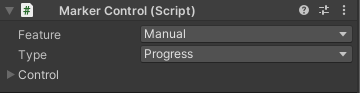
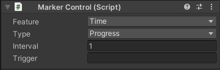
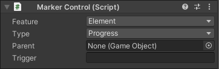
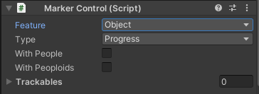

- Feasture: the update basis that can be Manual, Element, Object or Time. Selecting any of them changes the other visible options.
- Type: the type of property that is controlled by the input (Progress, Activation, Visibility or Altering).
- Manual
- ... Control: The location and input settings for activating the control (see Input settings).
- Time
- ... Interval: .
- ... Trigger: the activation trigger of the element (see Trigger).
- Element
- ... Parent: the update parent of this element (and which the trigger will be applied by).
- ... Trigger: the activation trigger of the element (see Trigger).
- Object
- ... With people: the mover in the element will track human players (this only works for 3D elements).
- ... With peoploid: the mover in the element will track humanoid objects (this only works for 3D elements). See Virtual Persons.
- ... Trackables: the list of objects that the mover can track.
|




|